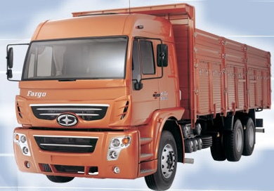
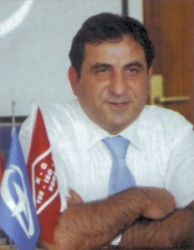
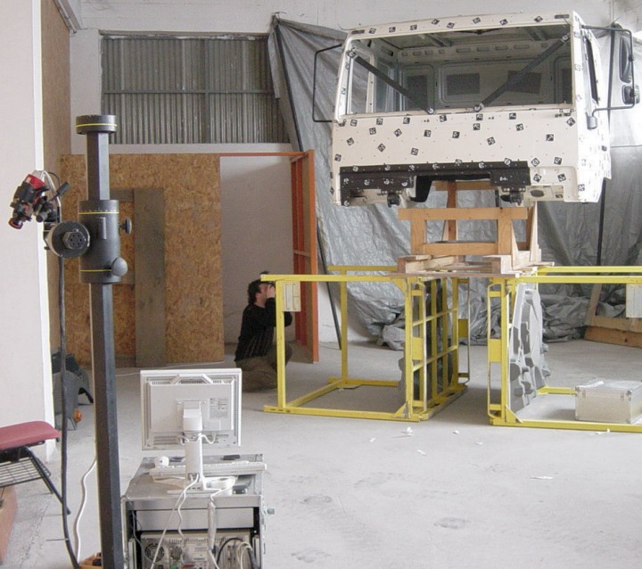
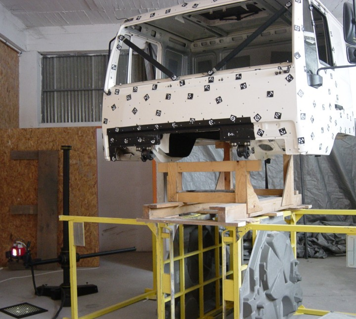
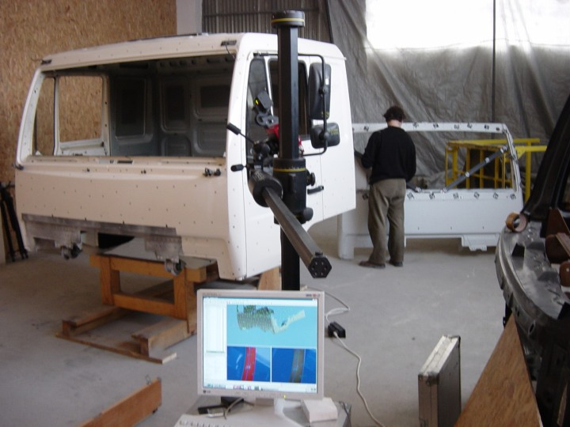

|
Röportaj: Erdinç Karaüç, Karoseri Aksamý ve Ar-Ge Müdürü, ASKAM A.Þ.
Not: Ýlk defa TurkCADCAM.net
Dergisi Ocak-Þubat 2006 Sayýsýnda yer almýþ bu yazý,
ek resimlerle birlikte Aðustos 2008'de TurkCADCAM.net portalýndan yayýnlanmaya baþlamýþtýr.
ASKAM tarafýndan üretilen yeni kamyon modeli "Fargo Hi-Ex" þoför ve yolcu için maksimum konfor için dizayn edilmiþ çift yataðý ve yataklarýn olduðu bölümde en yüksek taban-tavan mesafesi sunuyor:
ASKAM tarafýndan önemli oranda yerli tasarým ve mühendislik katkýsýyla üretilerek ilk olarak 2004 Aðustos ayý sonunda düzenlenen Ýzmir Enternasyonal Fuarý'nda tanýtýlan "Fargo Hi-Ex", yüksek konfor, geniþ kabin ve ekonomik fiyatý ile büyük ilgi gördü.
Gerekli tüm teknik ve mekanik donaným yatýrýmlarýný tamamlayan ASKAM, sadece Ar-Ge için araçla ilgili çeþitli deðiþik tasarým çalýþmalarýnda kullanýlmak üzere 2 milyon dolarlýk bilgisayar, yazýlým, personel yatýrýmý gerçekleþtirdi. Müþteri beklenti ve ihtiyaçlarýný tespit edebilmek için tüm kamyon þoförlerine yönelik "ASKAM Geleceðe Bakýþ" toplantýlarý düzenlendi. ASKAM, tüm bu yeniden yapýlanmanýn sonucu olarak iki yeni araç geliþtirdi. Ýlki uzun yol kategorisinde maksimum konforu amaçlayan tamamen yeni bir araç Fargo Hi-Ex, diðeri ise müþteri beklentileri doðrultusunda altyapýsý tamamen yenilenerek pazara sunulan þirket klasiði, þantiye ortamýnda kullanýma yönelik AS950 Süper.
Ülkemizde üretilen araçlar içinde iç derinliði en fazla olan, konforun gerektirdiði en son teknoloji ürünü, ergonomik sürücü ve yolcu koltuðu kullanýlan ASKAM Fargo Hi-Ex, þoför ve yolcu için maksimum konfor için dizayn edilmiþ çift yataðý ve yataklarýn olduðu bölümde en yüksek taban-tavan mesafesi sunuyor. 292 HP gücünde, sessiz, elektronik kumandalý, seyir kontrollü, Euro 2 standartlarýnda ve çevreci motoru olan araç, rampalarý çýkmada ve inmede, hýzlanmada ve yavaþlamada kullaným kolaylýðý saðlayan 16 ileri 2 geri vites ile donatýldý.
Fargo Hi-Ex ayrýca, içinde yer alan klima, buzdolabý gibi aksesuarlarýyla konfor ve kullaným rahatlýðý da saðlýyor. En ekonomik yakýt sarfiyatý ile yükü hissetmeden taþýyan Fargo Hi-Ex, konfor ve kesintisiz ulaþým için WC seçeneði de sunuyor.
ASKAM, kabine ait sac parçalarýn tasarýmýný kendi bünyesinde yaparken, ön panjur ve tamponun tasarýmý ve prototip imalatý konusunda Avitaþ A.Þ. ile çalýþtý. Avitaþ A.Þ., Marmara Üniv. Endüstri Ürünleri Tasarýmý Böl. öðretim üyelerinden Yrd. Doç. Dr. Hakan Ertem danýþmanlýðýnda ASKAM'a 80 civarýnda alternatif tasarým sundu. Seri imalat kararý verilmeden evvel en çok beðenilen iki tasarýmýn 1:1 ölçekli prototipleri Avitaþ'da imal edildi... Ön panjur ve tamponun cam elyafý takviyeli plastikten (FRP, Fiber Reinforced Plastic) seri imalatý da Avitaþ A.Þ. tarafýndan yapýlmaktadýr.
Sac kalýp analiz, tasarým ve imalatlarý Form 2000 A.Þ.'de yapýldý. 3D Tarama hizmeti Cadem A.Þ.'den alýndý. Yeni yapýþtýrma uygulamalarý konusunda Sika'dan destek alýndý.
Aþaðýda, eskiz safhasýndan kalýp iþlemeye kadar Fargo Hi-Ex'in ürün geliþtirme aþamalarýna ait bazý resimler görülmektedir:
Aþaðýda, Fargo Hi-Ex'in ASKAM'ýn çözüm ortaklarýyla yürütülen eþ zamanlý mühendislik çalýþmalarýyla 8 ay gibi kýsa bir sürede nasýl geliþtirildiðine dair bilgiler içeren, ASKAM Karoseri Aksamý ve Ar-Ge Müdürü Erdinç Karaüç ile yapýlmýþ röportaj bulunmaktadýr:
Kendinizden biraz bahseder misiniz?
Erdinç Karaüç: Yýldýz Teknik Üniversitesi'nden 1983 yýlýnda mezun oldum, askerliðe kadar 6 aylýk bir süre için Ýzmir'de AKON Hidrolik firmasýnda 1000 Tonluk preslerin tasarýmýnda çalýþtým. Askerlik sonrasý Ýstanbul HÝDREL Hidrolik firmasýnýn valf tasarým kýsmýnda 1,5 yýllýk bir çalýþma sonrasýnda, idealimdeki otomotiv sektörüne adým atmýþ oldum. Eski Chrysler, þimdiki ASKAM firmasýnýn Karoseri Aksamý geliþtirme (Styling) kýsmýnda proje mühendisi olarak göreve baþladým.
FARGO Hi-Ex Projesi'ne nasýl baþladýnýz?
Erdinç Karaüç: Tamamýyla farklý gözüken ve müþteri taleplerini karþýlayabilen yeni bir kamyon geliþtirme konusunda yönetim bize çok büyük destek verdi. Bize "siz istediðiniz gibi yapýn, biz size sýkýþtýðýnýz yerde destek vereceðiz" dedi. Oturup, herkese görev tanýmý yaptýk...
Genelde otomotiv firmalarý yeni bir model geliþtirirken kurumsal kimliði korumaya çalýþýr ve yeni modelin belli açýdan eskilere benzemesini ve devamý niteliðinde olmasýný ister. Yalnýz anladýðýmýz kadarýyla siz bu projede tam tersini hedeflemiþsiniz? Önceki kurumsal kimlikten kurtulmak istiyorsunuz?
Erdinç Karaüç: Evet, firmamýz ilk olarak Chrysler Kamyon Ýmalat ve Ticaret A.Þ. ismiyle kurulmuþ ve üretim yapýyordu. Ocak 2002'de Amerikan Chrysler ile Alman Daimler Benz'in birleþmesi sonucu firmamýz unvan deðiþikliðine giderek ASKAM unvanýný aldý. Haziran 2003'te, Çiftçiler Holding'in þirket hisselerini tek baþýna devralmasýyla da yeniden yapýlanma dönemine girdi.
Bu sebeple artýk Chrysler ile baðýmýzýn kalmadýðýný gösteren, ASKAM'a ait yeni bir model geliþtirmemiz gerekiyordu; Bizim araçlarýn klasik bir görünüþü vardý. Biz dedik ki, yeni bir araba yaptýðýmýz zaman "bunu eski Chrysler yapmýþ olamaz" desinler. "Bambaþka birileri yaptý" desinler. Bu imajý vermemiz gerekiyordu.
Sonuçta müþterilerimize klasik görünüþe sahip olmayan yepyeni bir model sunduk ve çok memnun oldular.
Aracýn markasý tamamýyla size mi ait? ASKAM logosu ilk kez Hi-Ex modeli araçlar için mi geliþtirildi? Hi-Ex, ne anlama geliyor?
Erdinç Karaüç: Fargo ve Desoto markalarý bizim tescilli markalarýmýzdýr. Fabrika Chrysler adý ile 3 yerli ortaða ait idi, bu ortaklarýn araçlarý Dodge, Desoto ve Fargo adlarý ile üretilirdi. Mercedes Chrysler'ý satýn alýnca Dodge markasý Amerikan Chrysler'ýn tescilli markasý olduðu için bu isimleri (Dodge ve Chrysler) kullanamama durumunda kaldýk. Ancak teknik desteklerinin devamýný saðlayacak yeni bir anlaþma yaparak adýmýzý ASKAM olarak deðiþtirdik. Yani ASKAM, araç markasý deðil þirket adýdýr, araçlarýmýzýn Markasý Burunlu araçlarýmýzda Desoto burunsuz modellerde Fargo'dur. Hi-Ex ismi, aracýn yüksekliði ve geniþliðini vurgulayan High ve Extended kelimelerinin kýsaltýlmasý ile oluþturuldu.
Fargo Hi-Ex için temelde hangi fonksiyonel deðiþiklikler yapýldý?
Erdinç Karaüç: Biz bütün bayilerle konuþtuk. Onlar genelde aracýn alt yapýsýndan memnundular. Kabin kýsmýnda deðiþiklik yapýlmasý gerekiyordu. Kabin kýsmý dardý. Mercedes'le kýyaslýyorlardý. Mercedes'te çift yatak var. Bizim araçlarýmýzda ise yer darlýðý sebebiyle þoför yatarken muavin yatamýyordu. Birisi otelde kalmak zorundaydý... Artýk aracýn çift yataðý var ve ayný zamanda yataklarýn olduðu bölüm piyasadaki en yüksek taban-tavan mesafesine sahip.
Motor ve þanzýman kýsýmlarýnda da bir deðiþiklik oldu; Artýk araç MAN motoru kullanýyor. Ýnþaat sektöründe çalýþan damperli modellere SN, uzun yollarda çalýþan kargo tipi modellere LN diyoruz, ikisinde de kullanýlan motor ayný MAN motorudur. SN Araçta PTO (Piyasada yavru þanzýman diyorlar) mevcuttur, makaslar LN araca göre daha kuvvetli, ayrýca çalýþma ortamý nedeni ile hava emiþ sisteminde siklon filtre kullanýlmaktadýr.
Aracýn endüstriyel tasarýmýný nasýl yaptýnýz?
Erdinç Karaüç: Türeteceðimiz eski kabinin 3D optik taramasý ve tersine mühendislik iþlemleri Cadem A.Þ. tarafýndan yapýldý. Elde edilen yüzey datalarýndan faydalanarak aracýn sac kabin tasarýmý ana hatlarý tarafýmýzdan CATIA'da oluþturulduktan sonra 3D modeller panjur ve tampon tasarýmý için çözüm ortaðýmýz Avitaþ A.Þ.'ne verildi. 3D taramadan elde edilen STL modeli de referans alarak, kabine uyum saðlayacak yeni ön panjur ve tamponun tasarýmýna geçildi.

TRITOP ile fotogrametrik ölçüm çalýþmasý


ATOS II ile yüzey tarama çalýþmasý.
|